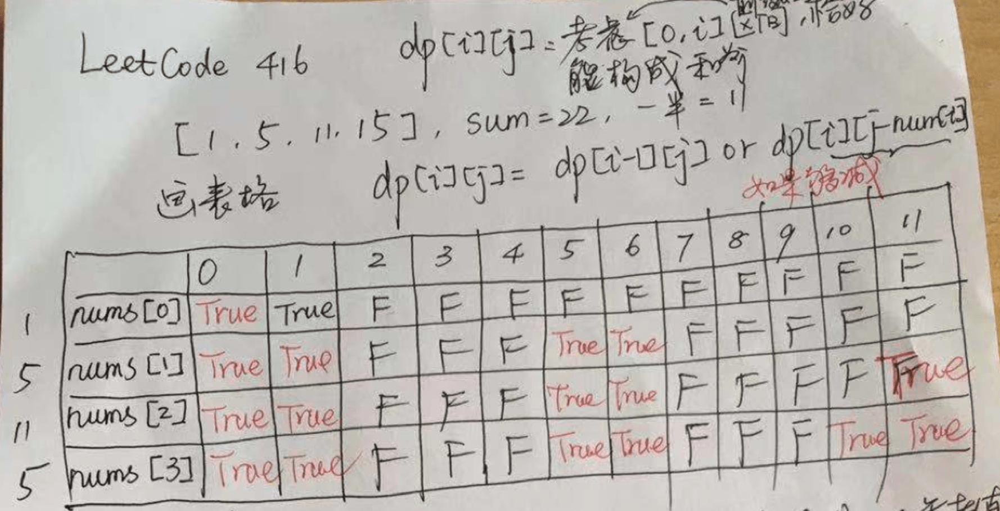

Given a non-empty array containing only positive integers, find if the array can be partitioned into two subsets such that the sum of elements in both subsets is equal.
Note:
-
Each of the array element will not exceed 100.
-
The array size will not exceed 200.
Example 1:
Input: [1, 5, 11, 5] Output: true Explanation: The array can be partitioned as [1, 5, 5] and [11].
Example 2:
Input: [1, 2, 3, 5] Output: false Explanation: The array cannot be partitioned into equal sum subsets.
这道题使用回溯法更容易理解，也更高效。

参考资料
Given a non-empty array containing only positive integers, find if the array can be partitioned into two subsets such that the sum of elements in both subsets is equal.
Note:
-
Each of the array element will not exceed 100.
-
The array size will not exceed 200.
Example 1:
Input: [1, 5, 11, 5] Output: true Explanation: The array can be partitioned as [1, 5, 5] and [11].
Example 2:
Input: [1, 2, 3, 5] Output: false Explanation: The array cannot be partitioned into equal sum subsets.
1
2
3
4
5
6
7
8
9
10
11
12
13
14
15
16
17
18
19
20
21
22
23
24
25
26
27
28
29
30
31
32
33
34
35
36
37
38
39
40
41
42
43
44
45
46
47
48
49
50
51
52
53
54
55
56
57
58
59
60
61
62
63
64
65
66
67
68
69
70
71
72
73
74
75
76
77
78
79
80
81
82
83
84
85
86
87
88
89
90
91
92
93
94
95
96
97
98
99
package com.diguage.algorithm.leetcode;
import java.util.Arrays;
import java.util.Objects;
/**
* @author D瓜哥, https://www.diguage.com/
* @since 2020-01-29 19:30
*/
public class _0416_PartitionEqualSubsetSum {
/**
* Runtime: 10 ms, faster than 72.90% of Java online submissions for Partition Equal Subset Sum.
* Memory Usage: 37.8 MB, less than 50.79% of Java online submissions for Partition Equal Subset Sum.
*
* https://leetcode-cn.com/problems/partition-equal-subset-sum/solution/0-1-bei-bao-wen-ti-xiang-jie-zhen-dui-ben-ti-de-yo/[动态规划（0-1 背包问题） - 分割等和子集 - 力扣（LeetCode）]
*/
public boolean canPartitionDp(int[] nums) {
if (Objects.isNull(nums) || nums.length == 0) {
return false;
}
int sum = 0;
for (int num : nums) {
sum += num;
}
if ((sum & 1) == 1) {
return false;
}
int target = sum / 2;
boolean[] dp = new boolean[target + 1];
dp[0] = true;
if (nums[0] <= target) {
dp[nums[0]] = true;
}
for (int i = 1; i < nums.length; i++) {
for (int j = target; nums[i] <= j; j--) {
if (dp[target]) {
return true;
}
dp[j] = dp[j] || dp[j - nums[i]];
}
}
return dp[target];
}
/**
* Runtime: 2 ms, faster than 91.78% of Java online submissions for Partition Equal Subset Sum.
* Memory Usage: 39.6 MB, less than 6.35% of Java online submissions for Partition Equal Subset Sum.
*
* Copy from: https://leetcode-cn.com/problems/partition-equal-subset-sum/solution/java-hui-su-fa-jie-fa-2ms-by-wang_dong/[java 回溯法解法 2ms - 分割等和子集 - 力扣（LeetCode）]
*/
public boolean canPartition(int[] nums) {
if (Objects.isNull(nums) || nums.length == 0) {
return true;
}
int sum = 0;
for (int num : nums) {
sum += num;
}
if ((sum & 1) == 1) {
return false;
}
Arrays.sort(nums);
reverse(nums);
return canPartition(nums, sum / 2, 0);
}
private boolean canPartition(int[] nums, int target, int index) {
if (index >= nums.length || nums[index] > target) {
return false;
}
if (nums[index] == target) {
return true;
}
return canPartition(nums, target - nums[index], index + 1)
|| canPartition(nums, target, index + 1);
}
private void reverse(int[] nums) {
int left = 0;
int right = nums.length - 1;
while (left < right) {
int temp = nums[left];
nums[left] = nums[right];
nums[right] = temp;
left++;
right--;
}
}
public static void main(String[] args) {
_0416_PartitionEqualSubsetSum solution = new _0416_PartitionEqualSubsetSum();
int[] n1 = {1, 5, 11, 5};
System.out.println(solution.canPartition(n1));
int[] n2 = {1, 2, 3, 5};
System.out.println(!solution.canPartition(n2));
}
}